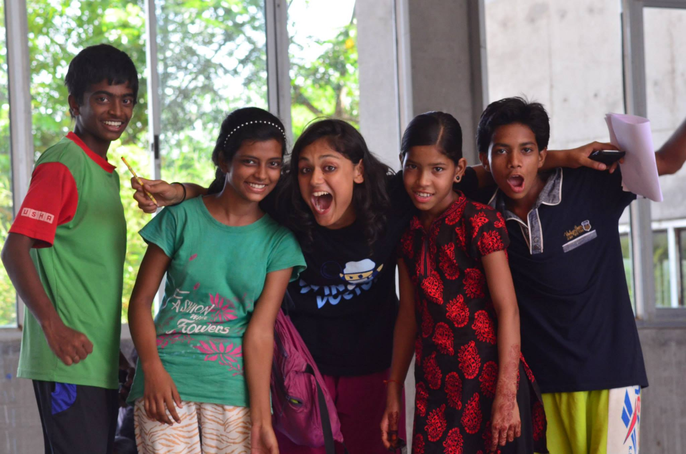

Ultimate Frisbee Youth Camps
In the last week of December 2014, Bridging The Gaps will bring together 150 teen boys and girls as well as 35 college-age coaches from across India for a 5 day sleep-away camp. We facilitate their bonding as teammates over sport (Ultimate Frisbee*) and art-based personal development activities. During the course of the camp, they overcome barriers, challenge themselves to develop skills and relationships and learn to celebrate the diversity of other's experiences.
Our camp intentionally brings together participants and coaches from various socio-economic, geographic and cultural backgrounds. In fact, the majority of our participants have never traveled outside their communities and would not be able to afford to attend camp without financial aid. Bridging the Gaps, is organized in collaboration with Pudiyador (pudiyador.org), a Chennai based NGO that provides safe and fun learning space for underprivileged children and young people.

In India, we live in a tremendously unequal society. Our mission is to inspire a generation of Indian youth to bridge the socio-economic gaps created by poverty, gender and class, through a uniquely designed sport-art camp. Our camps build and foster important values such as gender equality and open-mindedness, that translate into impactful benefits to the young campers, both players and coaches.
This December's camp will be held in Auroville, a small city located south of Chennai, about 2.5 hrs by bus/car and home to a vibrant international community including many talented and spirited Ultimate Frisbee players.